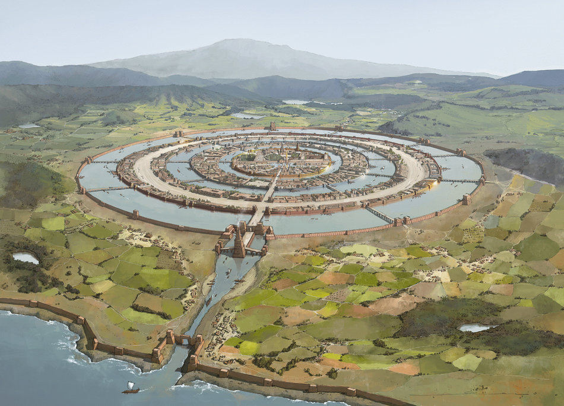
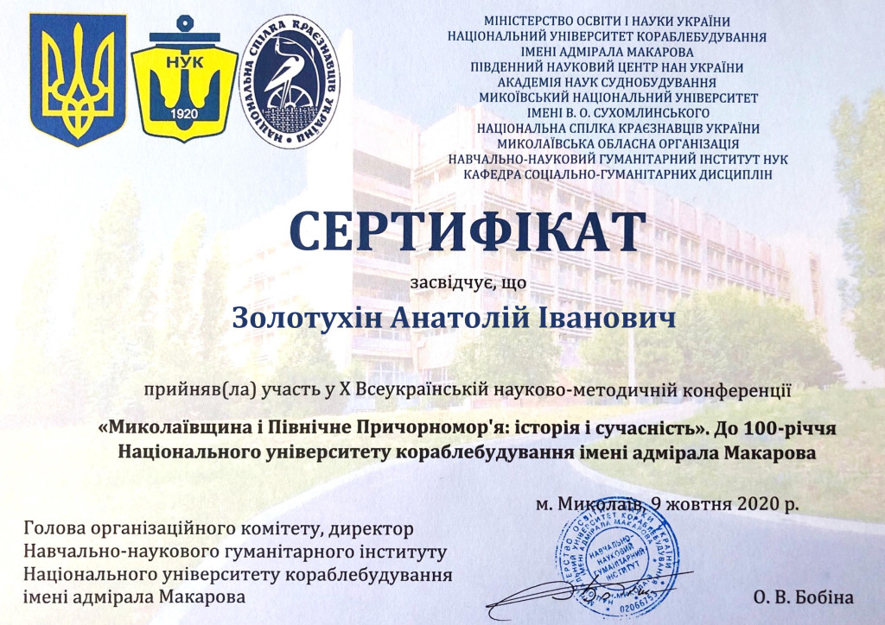

УДК 904 З81
Золотухін А.І. Дослідник (Україна, Миколаїв), azolotukhin@ukr.net
Доведено, що основним джерелом свідчень про Атлантиду були записи жерців Єгипту та пам’ять про неї кіммерійського роду Таргітая, які вважали себе її нащадками. Завдяки 7 р. пошукам в Єгипті, при підтримці фараона Псамметіха І, Гомером надані свідчення про Атлантиду в «Діалогах» Платона (це псевдонім Гомера!), а також в написі «Розетського каменю». Приховані тексти в них прочитані методами апокрифології й свідчать про те, що Атлантида проіснувала 1123 р. і керувалася кіммерійськими царями. Вона знаходилася в районі сучасного міста Євпаторія в Криму й була змита в Понт потужним цунамі під час землетрусу, які спричинив вибух вулкану (Санторін) на острові Тера (Фера) 8 жовтня 1447 р. до н.е. Це була перша європейська корабельна держава, яка об’єднувала портові міста Чорного, Мармурового, й східної частини Середземного морів. Ця цивілізація вивчається сьогодні як Крито-мінойська (Єгейська), а її треба перейменувати в Атлантичну.
Ключові слова: Атлантида, Гомер, Алібант, Таргітай, кіммерійці, апо-крифологія, Єгипет, кораблі.
Мало хто з істориків розуміє яку видатну роль в розвитку нашої цивілізації зіграло кораблебудування та мореплавство, яке почалося в Середземномор’ї біля XXVI ст. до н.е. й завершилося створенням першої в Європі корабельної держави Атлантиди, яка об’єднувала порти Чорного, Мармурового, Егейського й східної частини Середземного морів. Необхідність плавання по морям дало потужний поштовх для розвитку багатьох галузей наук від астрономії, географії, геофізики, математики, фізики, історії й до філології.
Завдяки методам апокрифології вдалося прочитати приховані тексти в основному першоджерелі свідчень про Атлантиду в «Діалогах» Платона (це псевдонім Гомера!) «Тімей» і «Критій». З результатами можна познайомитися в Розділі 8 «Апокрифологія історії Атлантиди» в книзі [1]. Окрім того, нещодавно вдалося прочитати приховані тексти відомого Розетського каменю і встановити, що це є автограф Гомера, створений ним в Єгипті 11 лютого 624 р. до н.е., під час 7 р. пошуків свідчень про Атлантиду при сприянні фараона Псамметіха І [2]. В прихованих текстах «Аргонавтики» Аполлонія Родоського (це плагіат!) Гомер чітко підкреслює, що Атлантида загинула не від астероїду, а від великої хвилі (цунамі), яка виникла внаслідок вибуху вулкану (Санторін) на острові Фера (Тера) підсилалася в протоках Пропонтиди (Дарданелли) і Босфорі, сягнула висоти Гераклових стовпів, і під час потужного землетрусу в сучасному Криму біля Євпаторії змила Атлантиду в Чорне море 8 жовтня 1447 р. до н.е.
Дата загибелі Атлантиди має сотні підтверджень в писемних творах кіммерійських творців античності, які писали під грецькими псевдонімами, а ще важливіше – в сотнях їх же написів-автографів на твердих носіях. Принциповим є те, що ця дата загибелі Атлантиди збігається з датою, визначеною наукою. Подробиці загибелі Крито-мінойської культури надані в книзі російською мовою І.О. Резанова «Атлантида: фантазія чи реальність?» («Наука», М., 1976).
Слід підкреслити, що кораблебудування і мореплавство розвивалося в містах-портах, які стали основою державності та розвитку тих наук, що майже не були потрібні материковим степнякам в їх повсякденному житті. Між тим, морякам конче були потрібні знання з фізики, математики, астрономії, географії, історії, етнографіі, релігій та багатьох мов народів, до яких вони мандрували, бо їх життя та діяльність напряму залежала від цих знань.
Греція своїм острівним положенням була морською державою через те, що майже всі її міста знаходилися на відстані не більше 100 км. від моря. В часи існування Атлантиди в Північному Причорномор’ї вона була тут єдиним великим містом (Рис. 1.), навколо якого за даними сучасної археології знаходилися невеликі поселення так званої сабатинівської культури епохи пізньої бронзи (XIV-XII ст. до н.е.), які займалися хліборобством і скотарством. Те, що ця культура зникла майже одночасно з Атлантидою наводить на думку, що це був єдиний кіммерійський народ, могутність якого визначалася розвинутим морським флотом атлантів, якій мав 1200 кораблів («Критій», 119 b) та виробництвом харчових продуктів степняками для торгівлі з Егейським світом. Про це свідчить те, що всі їх поселення тулилися до річок і морського узбереж’жя!
{kind=link}
Рис. 1. Реконструкція столиці держави Атлантиди
І хоча Гомер в «Діалогах» пише про якусь війну між Атлантидою та Грецією, це скоріше була данина нещодавно минувшій Троянської війни та протистоянням постійному звинуваченню владних греків (Солону) кіммерійців у їх варварстві. А ці «варвари», як це видно з цих досліджень, подарували грекам античну культуру й християнство, та ще й в цих же грецьких текстах сховали правду про себе, як про нащадків стародавньої Атлантиди та Заратуштри.
Оскільки розкопки Крито-мінойської (Егейської) цивілізації почалися лише у ХІХ стор., то про них нічого не знав Гомер, окрім міфів про потужного царя Міноса на Криті, тощо. Через те він зосередився лише на пошуках свідчень про Атлантиду, про її устрій, про те як і якими настановами керувалася влада саме у цьому місті-державі. А про Егейській світ сказано словами єгиптян, що на відміну кіммерійців-атлантів, греки майже нічого не знали про власну історію.
Насправді життя в державі Атлантида підтримувалося морською торгівлею між приморськими містами-державами, про що свідчать архітектура й фрески на Криті та більше за все фрески Санторіну, які збереглися під вулканічним попелом. На них ви не знайдете ніяких свідчень про військові дії, а лише зображення надзвичайно розвинутого в культурному відношенні мирного життя з прославленням кораблів. Більше того, можна побачити докази панування там матріархату. На фресках зображена хода чоловіків, яку очолюють жінки, а не чоловіки, здебільше там чоловіки прислужують жінкам. Причому аристократичні жінки та жриці ходили з відкритими грудями, що може бути прямим свідоцтвом того, що влада жінок мала сексуальне забарвлення. Це певною мірою суперечить владі 10-ти чоловіків-арістократів духу божого з роду Посейдона і Клейто, які керували Атлантидою, згідно з описам Гомера. З цього випливає, що відносини Егейського світу з Атлантидою були досить демократичними, побудованими на взаємних інтересах, які задовольнялися морською торгівлею.
В «Критії» (119с) під псевдонімом Платона Гомер пише про Посейдонові закони, записані першими царями на орихалковій стелі в центрі храму Посейдона. У написі Розетського каменю про причину загибелі Атлантиди Гомер в 624 р. до н.е. записав про це точніше: «123. Двох правителів приготували для вигнання за течією, що існувала в морі (кільця Книповича в Чорному морі – А.З). 124. Божественні заповіді були ними порушені. 125. Завдяки власному розуму піднеслися над усіма святими, яких шануємо. 126. Бога не має, казали вони, ми самі є ним як царі».
В «Критії» Гомер пише, що Зевс покарав людей Атлантиди за розбещеність. Посейдонови заповіді нічим не відрізнялися по змісту від 10-ти заповідей, даних Мойсею на Сінаї. Єдиним свідченням про життя Атлантиди є залишки культури на Криті та особливо фрески з часів Крито-мінойської культури на о. Санторін, що збереглися через те, що їх засипало попелом. Вони й є свідоцтвом високого рівню розвитку культури Атлантиди одночасно з моральною розбещеністю, про яку писав Гомер. І ця розбещеність, як бачимо, простиралася від культу чоловічої особистості в Атлантиді до жіночої – в Егейському світі.
За 20 останніх років автором завдяки методам апокрифології прочитані приховані тексти в десятках давньогрецьких епосів і творів, в 4-х Євангеліях та в давньоукраїнських «Словах» і літописах, а також в біля 2000 лапідарних написів на твердих носіях, знайдених в Україні(!), а не в Греції. Серед них виявлено біля 600 автографів Гомера й Анахарсіса! З усього прихованого матеріалу випливає, що не греки будували міста тут, а кіммерійці для них. Встановлені засновники й дати заснування 15-ти міст в Північному Причорномор’ї, та ще двох міст, Кіммеріда-Елай та Проконнес, які були збудовані в Елладі відповідно Таргітаєм і його сином Арістеєм. Всі 15 міст керувалися моряками з роду Таргітая, а до складу Пританії в Афінах, всі вони входили як одна з 10-ти грецьких колоній під ім’ям Гілеї, а з 592 р. до н.е. як Скіфії. В цих містах панувала демократія та не було рабства, на відміну від Еллади, тому греки тут селилися залюбки. Коли до влади приходили скіфи степняки з їх роду, такі як Пан, або Савлій, то встановлювалася тиранія й зв’язки з Пританією переривалися.
Доведено, що грецьку абетку, пергамент й писемність створили кіммерійці для греків, які вважали себе разом з ними нащадками атлантів. Через те, що в античні часи греки сприймали кіммерійців та скіфів варварами, їм довелося друкуватися в Афінах під багатьма грецькими псевдонімами. Лише Гомер (Пла-тон) і Анахарсіс (Арістотель) мали більше 40 псевдонімів, сюди треба додати біля 50 їх нащадків теж з псевдонімами. Так історично було створено міф про виключно грецьке походження античної культури та християнства!
Значним досягненням апокрифології слід вважати встановлення кіммерійської хронології стародавніх подій, реальність якої підтверджена точним збігом їх описів з такими астрономічними явищами, як сонячні затемнення та явлення комети Галлея. Базовою в цій хронології є дата народження засновника скіфського роду, кіммерійського царя Таргітая, в ніч з 15 на 16 липня, це був 1-й день хронології, а 1-м роком був – 776 р. до н.е. Гомер в цій хронології народився в 61 д. 119 р., а в сучасній – 14 вереcня 657 р. до н.е. Це відразу дало можливість встановити точні дати життя багатьох творців світової історії таких як Мойсей, Зороастр, багатьох творців античності, відновити родовід Христа, як реальної історичної особистості, та розгадати багато таємниць історії Європи, починаючи від часів Атлантиди. Завдяки цьому встановлені цикли духовного розвитку європейської цивілізації та визначені дві планети, які керують ними [3].
Все це докорінно змінює сучасну парадигму про стародавню грецьку колонізацію України й вторинну роль в неї наших предків кіммерійців та скіфів. Без врахування тисячолітнього існування Атлантиди в Криму неможливо пояснити той нечуваний парадоксальний інтерес наших предків кіммерійців та скіфів до грецької культури, який призвів до створення ними античності та християнства в грецькій обгортці. Таким чином, новою парадигмою можна вважати те, що античність і християнство є наслідком пост атлантичного кіммерійсько-греко-скіфського симбіозу культур. Разом з греками кіммерійці отримали перемогу над Троєю на морі й на суші (629-609 рр. до н.е.), разом відбили похід Дарія І на Скіфію (512 р. до н.е.), а потім разом з Афінами в 480 р. до н.е. скіфський флот воював в Соломинській битві! Неможливо уявити причини такої довірливої співпраці між греками й волелюбними кіммерійцями та скіфами, якщо б цьому не передувала їхня тисячолітня співпраця за часів існування Атлантиди.
Так що, Крито-мінойську (Егейську) цивілізацію слід перейменувати в Атлантичну, яка об’єднувала міста-порти від Чорного до Середземного морів під керівництвом кіммерійців Атлантиди. Оскільки греки у VIII ст. до н.е. не визнавали керівництво «варварами» ними в Атлантиді, то нащадки атлантів утаємничили їх і таким чином донесли правду до наших часів через 2500 р.
Гомер розглядав Атлантиду, як ідеальну державу, яка керувалася арістократами, тобто нащадками бога Посейдона. Саме існування Атлантиди дало поштовх для створення ним під псевдонімом Платона твору «Держава», в якому він вперше накреслив свої філософські погляди на можливі типи керування державою від найкращого до найгіршого: Арістократія; Тімократія; Олігархїя; Демократія та Тіранія. І ми сьогодні бачимо, що ця його праця залишається такою ж актуальною, як і вивчення історії корабельної Атлантиди.
Джерела та література
- Золотухін А.І. Україна – душа і серце Європи! (Апокрифологія історії України). Николаев, 2018. – 440 с., іл.
- Золотухін А.І. Сайт «Гомер і Атлантида»: Розетський камінь як автограф Гомера.
- Золотухін А.І. Сайт «Гомер і Атлантида»: Цикли духовного розвитку європейської цивілізації.
{kind=link}